Developer Efficiency Apps#
ShiftIt#
ShiftIt is a tool to manage window positions using hotkeys. It’s no longer maintained but its key bindings have been ported over to an automation tool called HammerSpoon.
brew install hammerspoon
Download, unzip, and open the ShitIt Key Bindings for Hammerspoon https://github.com/peterklijn/hammerspoon-shiftit/raw/master/Spoons/ShiftIt.spoon.zip
Click on the Hammerspoon menubar icon and click on ‘Open Config’. An init.lua file should now open in your editor of choice.
Paste the following configuration in the init.lua file, save it and close it.
hs.loadSpoon("ShiftIt") spoon.ShiftIt:bindHotkeys({})
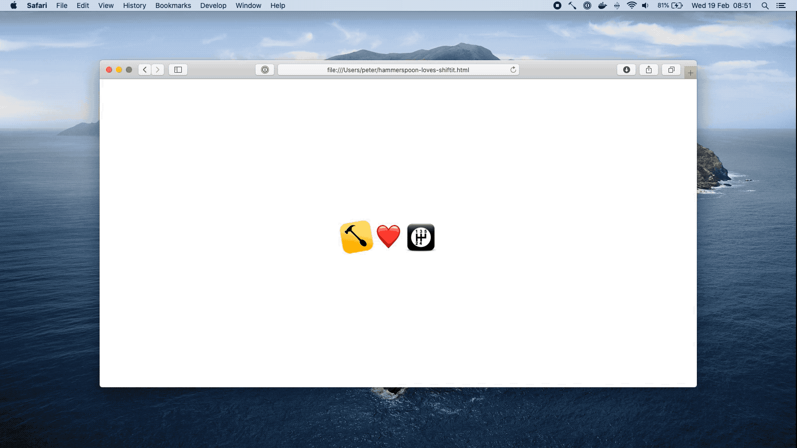

AWS CLI#
Install AWS CLI v2
curl "https://awscli.amazonaws.com/AWSCLIV2.pkg" -o ~/Downloads/AWSCLIV2.pkg && open ~/Downloads/AWSCLIV2.pkg
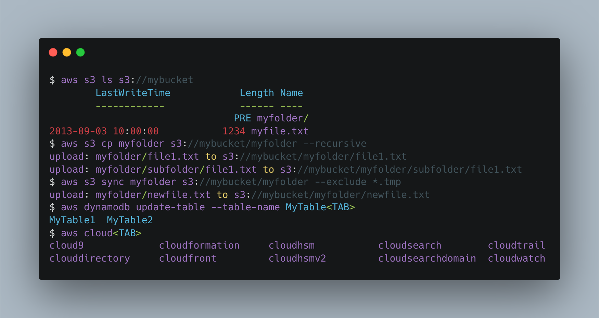
dunk#
Install and use dunk for git diffs
Pipe your git diff output into dunk to make it prettier!
pipx install dunk
git config --global alias.dunk '!git diff | dunk | less -R'
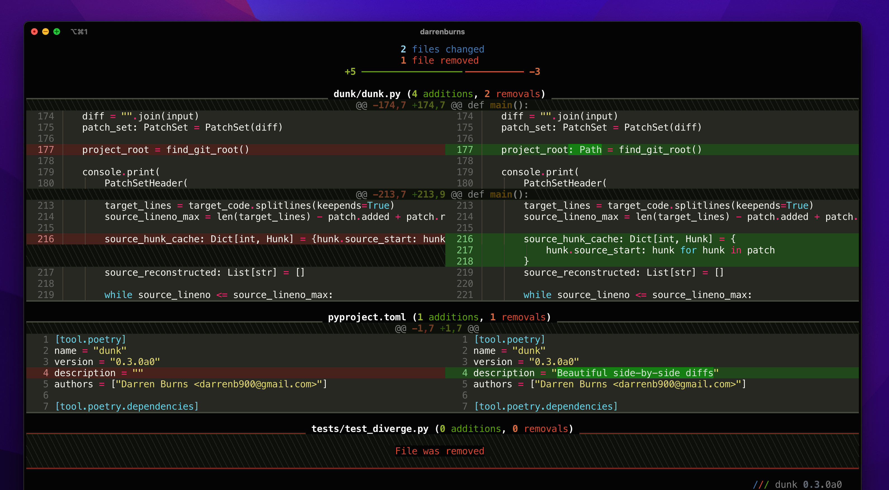
Docker Desktop#
Install Docker Desktop
After Installation, grant Docker additional resources the Docker Desktop App Preferences

Quicklook Plugins#
Install QuickLook Plugins
These plugins add support for the corresponding file type to Mac Quick Look (In Finder, mark a file and press Space to start Quick Look). The plugins includes features like syntax highlighting, Markdown rendering, preview of JSON, patch files, CSV, ZIP files and more.
brew install --cask \
qlcolorcode \
qlstephen \
qlmarkdown \
quicklook-json \
qlprettypatch \
quicklook-csv \
betterzip \
webpquicklook \
suspicious-package
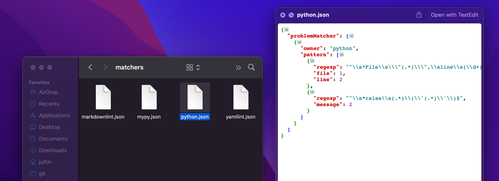
Alfred#
Install Alfred
brew install --cask alfred
Alfred is an app which boosts your efficiency with hotkeys, keywords, text expansion and more. Search your Mac and the web, and be more productive with custom actions to control your Mac.
Add a (
^+⌥+⌘+[space]) keyboard shortcut
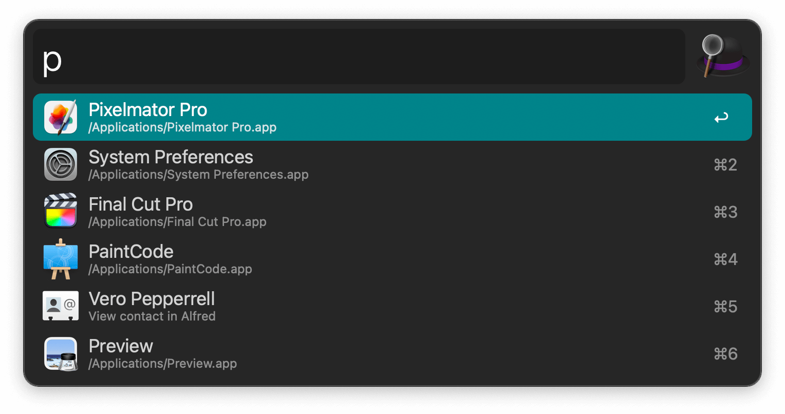
CheatSheet#
Install CheatSheet
brew install --cask cheatsheet
Hold ⌘ Key a bit longer to get a list of all active shortcuts of the current
application
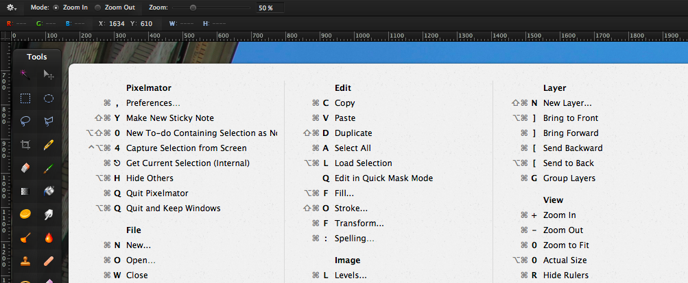
thefuck#
Install thefuck
brew install thefuck
The Fuck is an app that corrects errors in previous console commands.
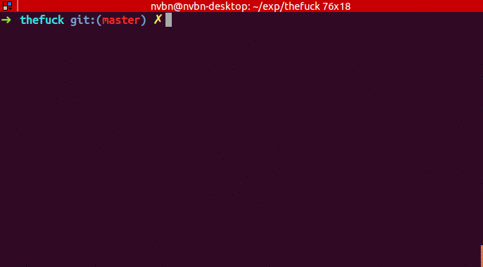
fig#
Install fig
brew install fig
fig adds IDE-style autocomplete to your existing terminal
Disable telemetry:
fig settings telemetry.disabled true
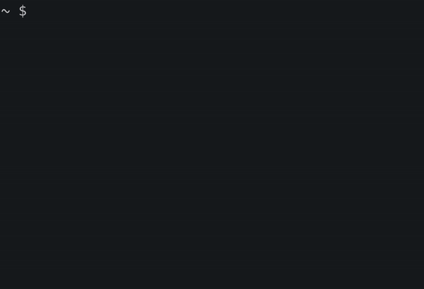
httpie#
Install HTTPie
pipx install httpie
HTTPie is a command-line HTTP client. The http & https commands allow for creating and
sending arbitrary HTTP requests. They use simple and natural syntax and provide formatted
and colorized output.
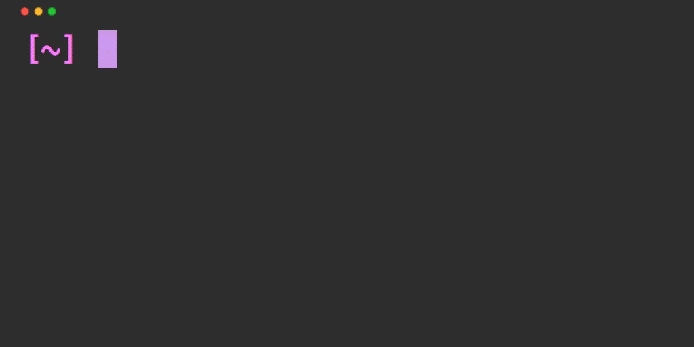
trash-cli#
Install trash-cli
brew install node
npm install --global trash-cli
In contrast to rm which is dangerous and permanently deletes files, this only moves them to the trash, which is much safer and reversible.
$ trash --help
Usage
$ trash <path|glob> […]
Examples
$ trash unicorn.png rainbow.png
$ trash '*.png' '!unicorn.png'
tmate#
Install tmate
brew install node
Tmate is a fork of tmux. It provides an instant pairing solution - you can generate a secure, one-time link to allow developers to SSH into your current terminal session.
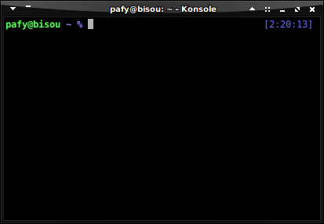
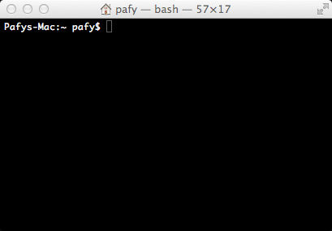
More Brew Apps#
-
Powerful JSON Parsing
-
This is htop, a cross-platform interactive process viewer.
-
Glances is a cross-platform system monitoring tool written in Python.
-
Prevent your computer from sleeping
-
VLC is a free and open source, cross-platform multimedia player
brew install jq
brew install glances
brew install --cask caffeine
brew install --cask vlc
brew install --cask htop